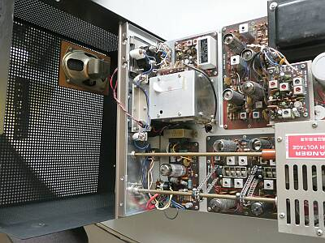
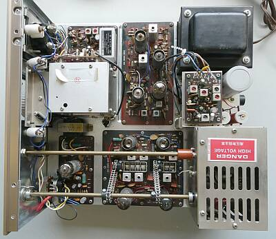
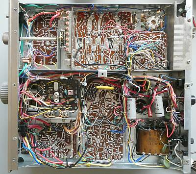

 |
上蓋を開けると
天井（天板）に、内蔵スピーカーが取り付けられています
ＴＲＩＯ ＨＦトランシーバで言えば、ＴＳ-３１１が近い構造かなぁと思います
ＩＦ：３３９５ＫＨｚ
ＶＦＯ：４．９～５．５MHｚ
ＴＲＩＯの十八番です（ＨｅａｔｈＫｉｔのＣＯＰＹ） |
 |
ユニット化
個々のユニットは、もともと完成品です
クリスタルフィルタが見える基板は送信ジェネレータ部で、キャリアバランスの再調整をしました
その右は、IF・検波部
その右のIFTの並んだ基板はノイズブランカ―部
その下に、１００KHｚマーカークリスタルが見えます
ＶＦＯの下は、受信AF部
その右は、送受ＲＦ部
ご覧のように、同調ＶＣの駆動は、チェーン駆動です
（ＴＳ-５１１と同世代かな） |
 |
シャーシ底面
バンド切替は、クリスタルの切り替えのみ
このモデルでは６個のオプション追加スペースがあります
その下に見えているクリスタルは、ＵＳＢ，ＣＷ用の３３９６．５ＫＨｚのもので、ＬＳＢ用の３３９３．５ＫＨｚはオプションのようです（ＨＣ-6/Ｕソケットが見えます） |
|
入手時の簡易なチェックでは、大きな問題はありませんでした
平衡変調キャリアバランス調整、ＩＦ／ＲＦ回路の調整だけでカタログスペック以上が得られました
その後、場所を動かしてエージング（通電テスト）をしていたところ、焼けた匂いが・・・・
ファイナル部の周りが異常に高温です
急いで電源を切って、裏蓋を開けて点検です
なんとファイナルバイアス回路のＲＦＣの半田付けがテンプラ状態で、外れていました
バイアス「０」で、通電していました
本機は、キット・・・ほかにも今後同様のトラブルが発生するかもしれません
組立対象全て、半田付けのやり直しも（５００ヵ所はありそう）ありですが、対処療法とすることにします |
|
オプション設定であった、ＬＳＢクリスタルを入手して組み入れました（ＴＳ-５２０用）
さんざん痛めつけたであろうＳ-２００１についても、程度の良いものに交換しました
この作業中に、半田付け不良４ヵ所を見つけ対処しました、いずれもIF基板の裏です
この先、まだ出てくるかも・・・・そこはキットです！
ＲＩＴのセンター位置も少しずれていましたので、この際に調整しました |
|
当時のＴＲＩＯ ＶＦＯの安定度の良さは定評がありました
本機も安定度とリニアリティについては非常に良好です
受信感度については、あまり良くないような風評があったように思いますが、実際に計測してみると全然そんなことはありません
ＳＳＢ，ＣＷ ０．１５μＶ 入力信号のＯＮ／ＯＦＦ Ｓ／Ｎ１０ｄｂ
ＡＭ ０．５μＶ入力時、変調のＯＮ／ＯＦＦ Ｓ／Ｎ１０ｄｂ
を確認しました
高感度です
当時のスペックを確認すると
ＳＳＢ，ＣＷ １μＶ Ｓ／Ｎ１０ｄｂ以上
ＡＭ ３μＶ入力時 Ｓ／Ｎ１０ｄｂ以上
と、ずいぶん控えめな？記述でした
Ｓメータの振れについて
ＨＦマシン同様の、おおよそ４０ｄｂμＶでＳ９です（渋い！）
昨今のＶ／ＵＨＦマシンにあっては、２０ｄｂμＶでＳ９のようなものもあるようで、Ｓメータの振れだけで感度を語ることはできません
ＡＭについては簡易な対応…受信は狭帯域なＳＳＢフィルタをそのまま使用、送信は低電力変調です
送信パワーは、現状で、ＳＳＢ／ＣＷにおいて１２Ｗ強です |
|
| 2022.04 JA4FUQ |